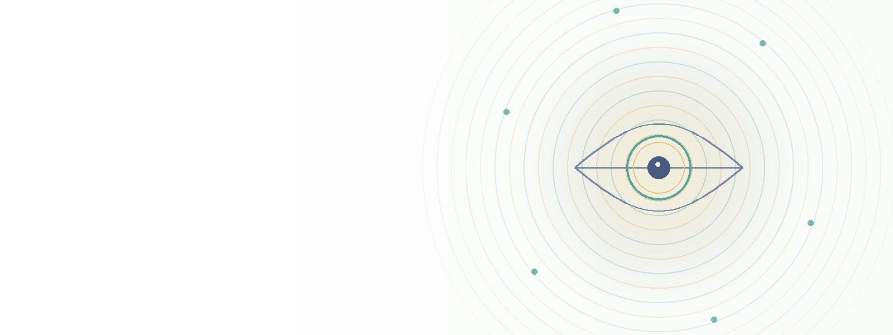

A single retinal fundus photo, read in one pass by a panel of specialists and routed to the right expert. The Ocular Station screens for diabetic retinopathy, age-related macular degeneration, glaucoma and hypertensive retinopathy — each specialist reporting its own honest score with a defer-to-clinician grey zone. It augments the eye-care professional; it never replaces them.
The AEGIS Ocular Station reads a retinal fundus photo once and runs it past four dedicated-data specialists at the same time, then routes the finding to the right expert. It is honest by construction: each specialist stands on its own validated metric, and any case that lands in the grey zone is flagged for a clinician, never auto-called. AEGIS scores; a clinician confirms.
Each dedicated-data specialist raised its ODIR baseline. The scores are reported plainly, strong and weaker alike.
| Specialist | Disease | Champion | Validation ROC-AUC |
|---|---|---|---|
| H | Hypertensive retinopathy | HistGB | 0.993 |
| D | Diabetic retinopathy (referable) | CatBoost | 0.977 |
| A | Age-related macular degeneration | CatBoost | 0.953 |
| G | Glaucoma | CatBoost | 0.899 |
| Myopia | Pathological myopia (ODIR base plate) | — | 0.979 |
| Cataract | Cataract (ODIR base plate) | — | 0.904 |
Honest note: the four dedicated specialists (D/A/G/H) were each trained on disease-specific public datasets and each broke its weaker ODIR baseline; scores are leak-certified (exact + perceptual-hash dedup). Any uncertain case in the 0.40–0.60 grey zone is deferred to a clinician rather than force a call.
The live station lets you try to beat the AI on real example fundus photos — some eyes look perfectly normal but are actually diseased. A learning game and screening aid, never a diagnosis.
Let’s be honest: AEGIS is a small research programme, not an eye clinic, and we don’t claim to be ophthalmologists. The system only gets better when it sees more real examples. You can already try it right now — the live station runs on real de-identified fundus photos from public ophthalmology datasets, so you can test AEGIS on real eyes without sending anything. And if you’d be willing to share your own de-identified retinal fundus image, you’d genuinely be helping us test and improve it — and we’ll show you what the model sees, purely as an illustration, never a diagnosis. A few honest ground rules first; sending an image means you accept them. Thank you for your support!